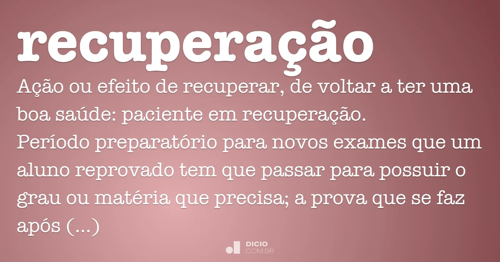
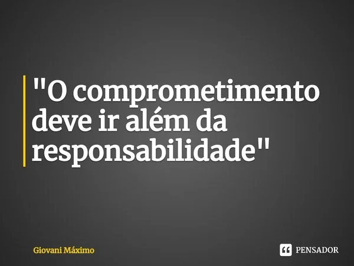

se liga
recuperação para recuperar o pontos que não foram obtidos em sala de aula
porque estou de recuperação?
porque infelizmente não acompanhei as aula como devia e acabei ficando para trás
o que fazer para que isso não ocorra novamente?
se esforçar mais e preocurar saber mais sobre o assunto

litas de açoes de compromentimento

- Ser pontual com os horarios
- Estar interessado nas aulas
- Prestar atenção no professor(a)
- Se esforçar ao maximo e se tiver duvida perguntar!
- Ser uma pessoa interativva nas aulas,buscando o maximo de conhecimento